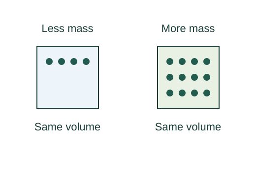

Density: a definition and its consequences
Density describes how much mass occupies a given volume. The average-density formula is a definition. Integrating a specified local density to obtain total mass is a mathematical consequence of that definition.
What the symbols mean
ρ: mass density (kg/m³); m: mass (kg); V: volume (m³). Local density may depend on position.
When this applies
Use m/V for average density; use a single constant ρ throughout an object only if it is uniform.
Understanding the relation
Here the starting relation defines the quantity being discussed. We can understand that definition and derive its consequences, while keeping the definition itself distinct from those consequences.

Define the average
Divide the total mass by the total volume. This tells us the mass per unit volume, but says nothing by itself about whether different regions have different densities.
Resolve the object into small pieces
For a sufficiently small volume element around a point, define local density through the limiting ratio. The differential form tells us how to recover the mass of that element.
Add all the elements
Integrating is the continuous version of summing the masses. If density is constant it can be taken outside the integral.
A closer lookWhy does adding small pieces give an integral? ↗Check the scale
For uniform material, doubling the volume doubles the mass without changing the density. This makes density an intensive property.
A worked example
A uniform 0.002 m³ object of density 2700 kg/m³ has mass m = 2700 × 0.002 = 5.4 kg.
Derivation behind this calculation ↗A point to keep straight
Mass and weight differ: density uses mass, while weight also depends on the local gravitational field.
Check the assumptions and derivation ↗